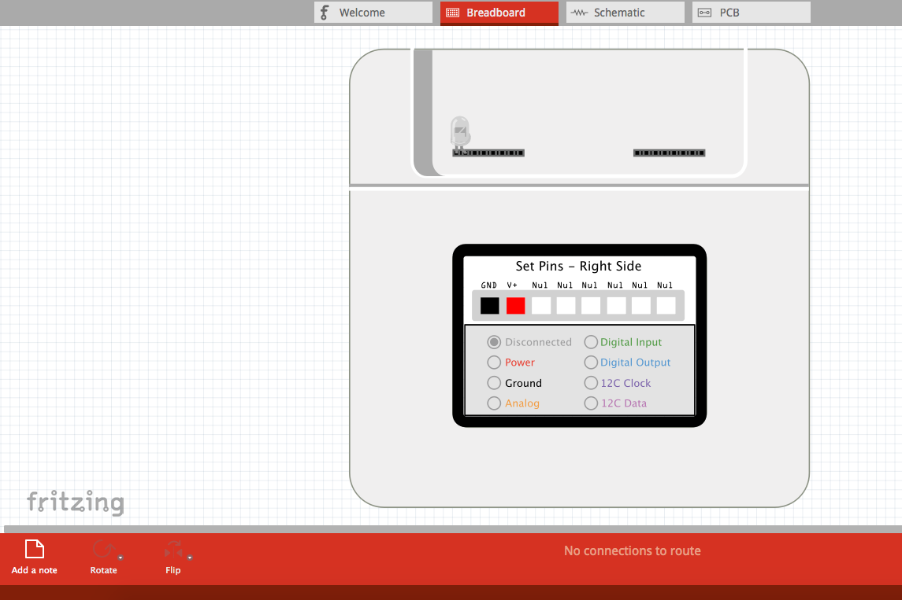

project //
Fritzing parts for Kinoma Create
occasion/context
prototype engineering internship at Kinoma
target user group
Kinoma Create users/makers
problem
For the "getting started with hardware" samples, it was necessary to share wiring diagrams with new users. Through research into related frameworks (Arduino, Raspberry Pi), I found Fritzing-- a popular application for creating and sharing wiring diagrams. Fritzing comes loaded with graphics of many off-the-shelf components that can be wired together using direct manipulation. This approach is more scalable than tailoring custom graphics in a program such as Illustrator and allows users to produce wiring diagrams by downloading the Kinoma Create parts bin.
outcome
I designed the Fritzing parts using Adobe Illustrator and Fritzing.

front image of a wiring diagram connecting an LED to the Kinoma Create in Fritzing